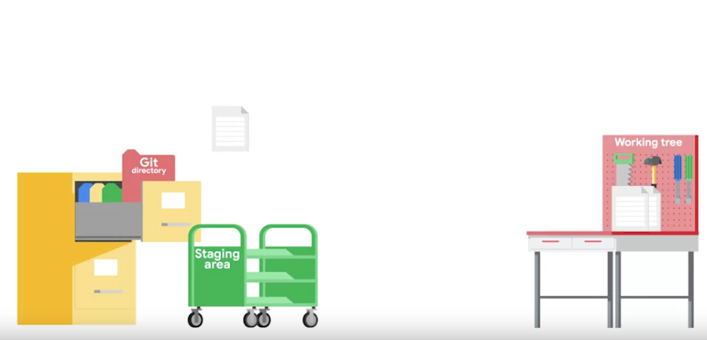
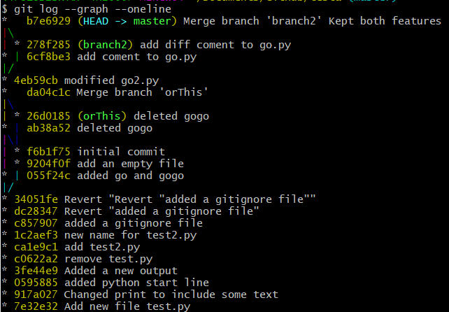
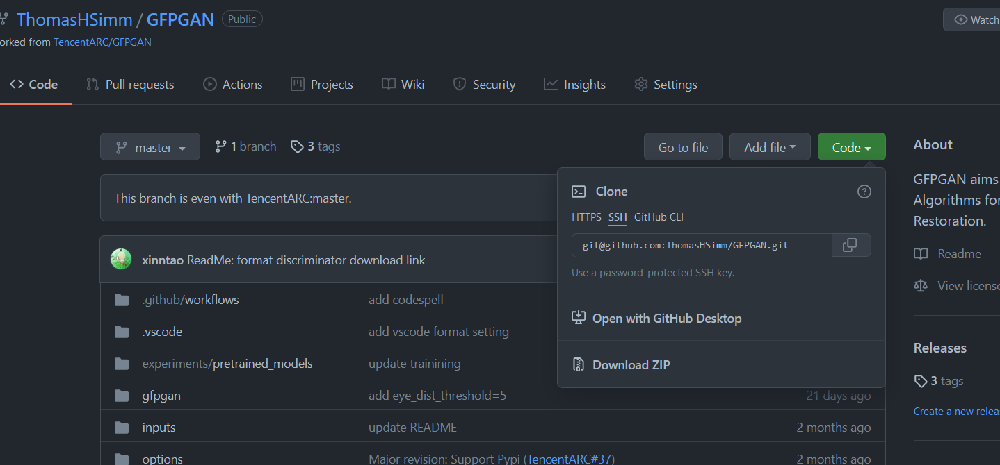
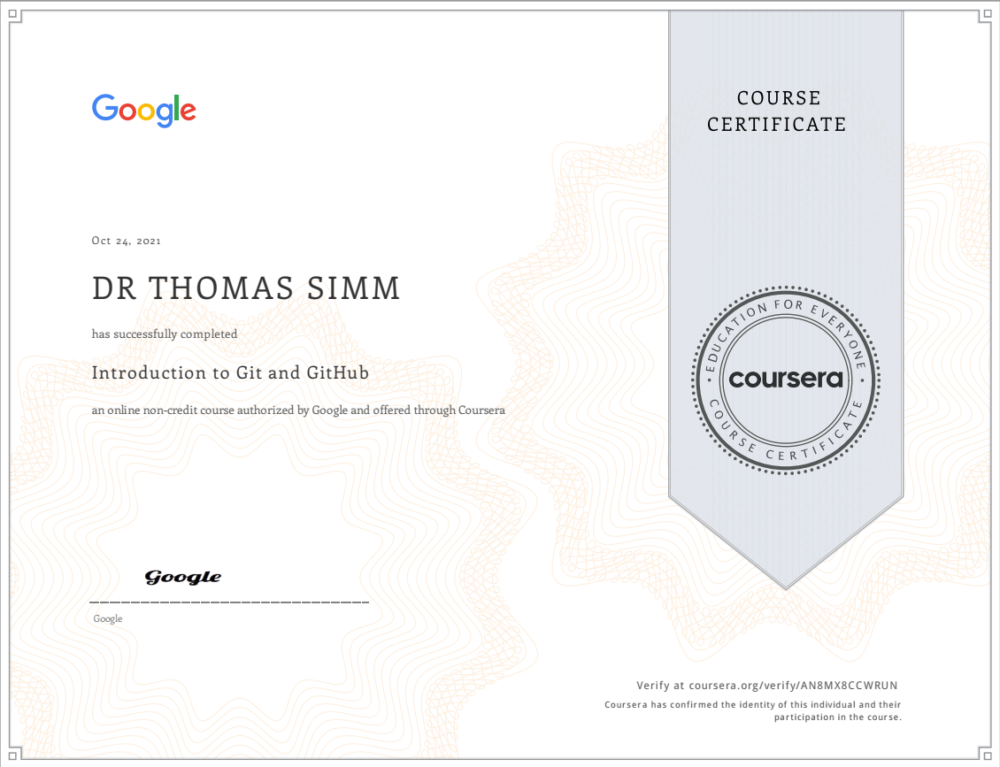

>>diff test.py test2.py

Git and Github

Introduction to Git and GitHub
From the Coursera course within Google IT Automation with Python Professional Certificate https://www.coursera.org/learn/introduction-git-github/home/welcome
Check out the following links for more information:
https://git-scm.com/doc
https://en.wikipedia.org/wiki/Version_control
The Linux kernel documentation itself (https://git.kernel.org/pub/scm/linux/kernel/git/torvalds/linux.git/tree/Documentation/process/submitting-patches.rst?id=HEAD), as well as impassioned opinions from other developers. (http://stopwritingramblingcommitmessages.com/ https://robots.thoughtbot.com/5-useful-tips-for-a-better-commit-message)
You can check out “Setting your email in Git” (https://help.github.com/articles/setting-your-email-in-git/) and “Keeping your email address private” on the GitHub help site for how to do this. (https://docs.github.com/en/account-and-profile/setting-up-and-managing-your-github-user-account/managing-email-preferences/setting-your-commit-email-address)
Run in github bash
Git is a distributed version control system.
Distributed means that each developer has a copy of the whole repository on their local machine.

diff find the difference between two files
diff
https://man7.org/linux/man-pages/man1/diff.1.html
diff is used to find differences between two files. On its own, it’s a bit hard to use; instead, use it with diff -u to find lines which differ in two files: diff -u
diff -u is used to compare two files, line by line, and have the differing lines compared side-by-side in the same output. See below:
output
3c3
< c=a**b
---
> c=a**b+a
4a5
> d=c**c3c3
line in file 1 - c=change - line in file 2 a=added
>>diff -u test.py test2.py
#output
--- test.py 2021-10-17 11:14:24.880950400 +0100
+++ test2.py 2021-10-17 11:14:21.155278200 +0100
@@ -1,4 +1,5 @@
a=3
b=2
-c=a**b
+c=a**b+a
print(c)
+d=c**cadding -u gives extra context to changes
applying changes
Create a file with the changes in
>>diff -u test.py test2.py >change.diffpatch
http://man7.org/linux/man-pages/man1/patch.1.html
>>patch test-Copy1.py < change.diffthis applies changes in change.diff to test-Copy1.diff
VCS version control system
By keeping track of the changes that we make to our files, a VCS lets us know when a file changed, who changed it, and also lets us easily roll back those changes.
git config
>>git config --global user.email "me@example.com"
>>git config --global user.name "My name" set email and name
–global means for all repositories
# Find details of configuration
>>git config -lcreate a new repository
>>mkdir testa
>>cd testa
>>git init detals of the created directory
>>ls -l .git
#output->>
-rw-r--r-- 1 44781 197609 23 Oct 17 12:06 HEAD
-rw-r--r-- 1 44781 197609 130 Oct 17 12:06 config
-rw-r--r-- 1 44781 197609 73 Oct 17 12:06 description
drwxr-xr-x 1 44781 197609 0 Oct 17 12:06 hooks/
drwxr-xr-x 1 44781 197609 0 Oct 17 12:06 info/
drwxr-xr-x 1 44781 197609 0 Oct 17 12:06 objects/
drwxr-xr-x 1 44781 197609 0 Oct 17 12:06 refs/The git directory acts as a database for all the changes tracked in Git and the working tree acts as a sandbox where we can edit the current versions of the files.
add a file to the directory and get it tracked
>>cp ../test.py .
#note the dot at end to say copy to this directory
>>git add test.pyThe file is now in the staging area or index
contains all info about what files and changes are in the next commit
>>git add -pthis would all tracked and shows differences and asks if want to make the add
get the status
>>git status
On branch master
No commits yet
Changes to be committed:
(use "git rm --cached <file>..." to unstage)
new file: test.pytest.py ready to be committed
Make a commit
>>git commit
# Please enter the commit message for your changes. Lines starting
# with '#' will be ignored, and an empty message aborts the commit.
#
# On branch master
#
# Initial commit
#
# Changes to be committed:
# new file: test.py
#
~
~
~
~
~
~
~
~
~
~
~this opens up an editor with text as shown
Enter details of the commit
To exit and save: Type the description at the very top, press esc to exit insert mode, then type :x! (now the cursor is at the bottom) and hit enter to save and exit
Alternatively add -m command with details of commit
git commit -m ‘Changed print to include some text’
Tracked files
- Modified
- made changes but not committed yet
- Staged
- in staging area
git add
- Committed
- in git directory
git commit
Commit messages
Brief description
More indepth details
More indepth
(remember to add new lines)
Git log
>>git log
commit 05958854b7ad68f8b1a178f260dccd844aec0e16 (HEAD -> master)
Author: thomashsimm <thomas @gmail.com>
Date: Sun Oct 17 13:04:10 2021 +0100
added python start line
commit 917a027f6282ce1c2c01e00a48bb72995e3984a6
Author: thomashsimm <thomas @gmail.com>
Date: Sun Oct 17 12:56:41 2021 +0100
Changed print to include some text
commit 7e32e328db17594fd0a507b4a23f489b68c09543
Author: thomashsimm <thomas @gmail.com>
Date: Sun Oct 17 12:38:02 2021 +0100
Add new file test.pySkipping the Staging Area
>>git commit -a
or
>>git commit -a -m "Added a new output"a shortcut to stage any changes to tracked files and commit them in one step
Getting more information about our changes
>>git log -pEquivalent to diff -u (describe above)
to get more info on a particular commit
>>git show 7e32e328db17594fd0a507b4a23f489b68c09543Some stats of repo
>>git log --statchanges in file, relative to repo/staging area
>>git diffDeleting and Renaming Files
>>git rm test.pyremoves the file test.py
>>git commit -m "Deleted test.py"commit the change/deletion of the file
>>git mv test2.py test.py rename a file
N.B. git mv can also be used for moving files
>>echo .DS_STORE > .gitignore
#create .gitignore file to ignore .DS_STORE files (OS sys)
>>ls -la
#view hidden files
>>git add .gitignore
#add file
>>git commit -m "added a gitignore file"
#commit changesOverview git cheat sheet
git commit -a Stages files automatically
git log -p Produces patch text
git show Shows various objects
git diff Is similar to the Linux diff command, and can show the differences in various commits
git diff –staged An alias to –cached, this will show all staged files compared to the named commit
git add -p Allows a user to interactively review patches to add to the current commit
git mv Similar to the Linux mv command, this moves a file
git rmSimilar to the Linux rm command, this deletes, or removes a file
There are many useful git cheatsheets online as well. Please take some time to research and study a few, such as this one. https://github.github.com/training-kit/downloads/github-git-cheat-sheet.pdf
.gitignore files
.gitignore files are used to tell the git tool to intentionally ignore some files in a given Git repository. For example, this can be useful for configuration files or metadata files that a user may not want to check into the master branch. Check out more at: https://git-scm.com/docs/gitignore.
A few common examples of file patterns to exclude can be found here https://gist.github.com/octocat/9257657.
Undoing changes
Undoing unstaged changes
>>git restore test.py“git restore
This comes up as an option to do when go git status
Same as git checkout
This takes the file from the directory and changes the one in the working tree to match this
Undoing staged changes
Say we’ve added all files in a directory
git add *
When we run git status we reaslise it includes a file we don’t want to add
To remove the add we do:
>>git restore --staged newfile.txt
or
>>git reset HEAD newfile.txtAmending commits
>git commit --amendThis allows us to ammend the last commit
So for example we could add some more files to it and then modify the comments on the commit
Then overwrites the previous commit
Only use for: local changes
Amend Commits are not for commits that have been made public
Rollbacks
Revert to an earlier commit
With git revert, a new commit is created with inverse changes. This cancels previous changes instead of making it as though the original commit never happened.
>>git revert HEADAdd description of why doing rollback
Recall press esc to exit insert mode, then type :x! (now the cursor is at the bottom) and hit enter to save and exit
Identifying a commit
SHA1 hash numbers that Git uses to identify commits - They provide the consistency that is critical for distributed systems such as Git.
They are created using the commit message, date, author, and the snapshot taken of the working tree.
They are composed of 40 characters.
>>git show
# pick one of the commits
>>git show 34051fe65ab25ae011b0473fd1707e6e84f89b71
# And if we wanted to revert to this
>>git revert 34051fe65ab25ae011b0473fd1707e6e84f89b71
# this would also work if id is unique in repo
>> git revert 34051fGit Revert Cheat Sheet
git checkout is effectively used to switch branches. https://git-scm.com/docs/git-checkout
git reset basically resets the repo, throwing away some changes. It’s somewhat difficult to understand, so reading the examples in the documentation may be a bit more useful. https://git-scm.com/docs/git-reset#_examples
There are some other useful articles online, which discuss more aggressive approaches to resetting the repo. https://jwiegley.github.io/git-from-the-bottom-up/3-Reset/4-doing-a-hard-reset.html
git commit –amend is used to make changes to commits after-the-fact, which can be useful for making notes about a given commit. https://git-scm.com/docs/git-commit#Documentation/git-commit.txt—amend
git revert makes a new commit which effectively rolls back a previous commit. It’s a bit like an undo command. https://git-scm.com/docs/git-revert
There are a few ways you can rollback commits in Git. https://git-scm.com/book/en/v2/Git-Basics-Undoing-Things
There are some interesting considerations about how git object data is stored, such as the usage of sha-1.
Feel free to read more here:
https://en.wikipedia.org/wiki/SHA-1
https://github.blog/2017-03-20-sha-1-collision-detection-on-github-com/
Git Branch
a pointer to a particular commit
it represents an independent line of development in a project
the default branch that git creates for you when initialised is called master (sometimes main)
To do something new or experimenting try adding a new branch
New branches enable changes to be worked on without disrupting the most current working state
List all branches in a repo
>>git branch
* masterjust the one at the moment the master
Add a new branch
>>git branch tryThis
>>git branch
* master
tryThisthe * indicates the branch we are in
Switch to different branch
we use git checkout to check out the latest snapshot for both files and for branches.
>>git checkout tryThis
Switched to branch 'tryThis'
>>git branch
master
* tryThisAdd and switch branches
>>git checkout -b orThis
Switched to a new branch 'orThis'
>>git branch
master
* orThis
tryThis# look at last two commits
>> git log -2
commit 9204f0f890143d81c8fc3fa5db839be5f65e63e9 (HEAD -> orThis)
Author: thomashsimm <thomas @gmail.com>
Date: Sun Oct 17 18:25:06 2021 +0100
add an empty file
commit 34051fe65ab25ae011b0473fd1707e6e84f89b71 (tryThis, master)
Author: thomashsimm <thomas @gmail.com>
Date: Sun Oct 17 15:36:19 2021 +0100
Revert "Revert "added a gitignore file""
This reverts commit dc28347e0177c298e9b527ab8140973fb3a567ba.We see the last two commits in this branch. Notice how next to the latest commit ID, git shows that this is where head is pointing to and that the branch is called orThis.
Next to the previous commit,git shows that both the master and the trThis branches are pointing to that snapshot of the project.
In this way, we can see that the orThis branch is ahead of the master branch.
>>nano gogo2.py
#creates file gogo2.py
>>git add *
>>git commit -m "gogo2.py file added to orThis"
>>ls -l
total 2
-rw-r--r-- 1 44781 197609 9 Oct 17 18:56 gogo2.py
-rw-r--r-- 1 44781 197609 38 Oct 17 14:51 test.py
#go back to master
>>git checkout master
total 3
-rw-r--r-- 1 44781 197609 7 Oct 17 18:59 go.py
-rw-r--r-- 1 44781 197609 16 Oct 17 18:59 gogo.py
-rw-r--r-- 1 44781 197609 38 Oct 17 14:51 test.py
#gogo2.py is not here!Delete branch
>>git branch -d tryThis
error: The branch 'tryThis' is not fully merged.
If you are sure you want to delete it, run 'git branch -D tryThis'.
>>git branch -D tryThis
Deleted branch tryThis (was 59ec266).
>>git branch
* master
orThisMerging branches
Merging is the term that Git uses for combining branch data and history together.
#make sure in master
>>git branch
* master
orThis
#then merge orThis
>>git merge orThis
Updating da04c1c..4eb59cb
Fast-forward
go2.py | 4 ++++
1 file changed, 4 insertions(+)
create mode 100644 go2.py>>git log
commit 4eb59cb2dca6a09fb59477fcdf4595551ff9f85f (HEAD -> master, branch2)
Author: thomashsimm <thomas @gmail.com>
Date: Sun Oct 17 19:17:28 2021 +0100Both branches are pointed at the same commit -> (HEAD -> master, branch2)
Merge conflict
From time to time, we might find that both the branches we’re trying to merge have edits to the same part of the same file.
This will result in something called a merge conflict.
Normally, Git can automatically merge files for us. But when we have a merge conflict, it will need a little help to figure out what to do.
#amend same file in master and a new branch- branch2
>>git merge branch2
Auto-merging go.py
CONFLICT (content): Merge conflict in go.py
Automatic merge failed; fix conflicts and then commit the result.
#error message produced>>git status
On branch master
You have unmerged paths.
(fix conflicts and run "git commit")
(use "git merge --abort" to abort the merge)
Unmerged paths:
(use "git add <file>..." to mark resolution)
both modified: go.py
Untracked files:
(use "git add <file>..." to include in what will be committed)
.gogo.py.swp
no changes added to commit (use "git add" and/or "git commit -a")To try to resolve this we open up the file in editor
>>nano go.py
####in editor>>
b=3
<<<<<<< HEAD
#hello
=======
#comment here too
>>>>>>> branch2
####which we change to this to keep both mods>>
b=3
#hello
#comment here too
Then add the file and check the status
>>git add go.py
>>git status
On branch master
All conflicts fixed but you are still merging.
(use "git commit" to conclude merge)
Changes to be committed:
modified: go.py
>>git commit
[master b7e6929] Merge branch 'branch2' Kept both featuresSyntaxError: invalid syntax (<ipython-input-2-5de9e5fcd226>, line 1)Conflicts now gone
And committed
–graph –oneline ==>> helps us visualise the merge
>>git log --graph --oneline
Abort merge
>>git merge --abortGit Branches and Merging Cheat Sheet
git branch Used to manage branches https://git-scm.com/docs/git-branch
git branch [branchname] Creates the branch https://git-scm.com/book/en/v2/Git-Branching-Basic-Branching-and-Merging
git branch -d [branchname] Deletes the branch https://git-scm.com/docs/git-branch#Documentation/git-branch.txt–D
git branch -D [branchname] Forcibly deletes the branch https://git-scm.com/docs/git-branch#Documentation/git-branch.txt–D
git checkout [branchname] Switches to a branch. https://git-scm.com/docs/git-checkout
git checkout -b [branchname] Creates a new branch and switches to it. https://git-scm.com/docs/git-checkout#Documentation/git-checkout.txt–bltnewbranchgt
git merge [branchname] Merge joins branches together. https://git-scm.com/docs/git-merge
git merge –abort If there are merge conflicts (meaning files are incompatible), –abort can be used to abort the merge action.
git log –graph –onelineThis shows a summarized view of the commit history for a repo. https://git-scm.com/book/en/v2/Git-Basics-Viewing-the-Commit-History
Working with remotes
GitHub is a web-based Git repository hosting service.
On top of the version control functionality of Git, GitHub includes extra features like bug tracking, wikis, and task management.
GitHub lets us share and access repositories on the web and copy or clone them to our local computer, so we can work on them.
GitHub is a popular choice with a robust feature set, but it’s not the only one. Other services that provide similar functionality are BitBucket, and GitLab.

GitHub provides free access to a Git server for public and private repositories.
It limits the number of contributors for the free private repositories, and offers an unlimited private repository service for a monthly fee. We’ll be using a free repository for our examples, which is fine for educational use, small personal projects, or open source development.
Clone a directory
This is to create a local copy of a repository from the github website
Go to the repo
Click code and copy the clone URL HTTPS
- other options are availabe too

- In Git bash run
git clone https://github.com/ThomasHSimm/SwanseaProperty.git
Fill in any passwords if required
# Make changes to files
#Then add and commit the changes
>>git commit -a -m "Modified the readme"
[main c9307f7] modified read me
1 file changed, 1 insertion(+)Git Push
Send the changes to the remote repository
>>git push
Enumerating objects: 5, done.
Counting objects: 100% (5/5), done.
Delta compression using up to 8 threads
Compressing objects: 100% (3/3), done.
Writing objects: 100% (3/3), 309 bytes | 309.00 KiB/s, done.
Total 3 (delta 2), reused 0 (delta 0), pack-reused 0
remote: Resolving deltas: 100% (2/2), completed with 2 local objects.
To https://github.com/ThomasHSimm/SwanseaProperty.git
08aa0a2..c9307f7 main -> mainBasic Interaction with GitHub Cheat-Sheet
There are various remote repository hosting sites:
- GitHub
- BitBucket
- Gitlab.Follow the workflow at https://github.com/join to set up a free account, username, and password. After that, these steps (https://help.github.com/articles/create-a-repo/) will help you create a brand new repository on GitHub.
Some useful commands for getting started:
git clone URL
Git clone is used to clone a remote repository into a local workspace https://git-scm.com/docs/git-clone
git push
Git push is used to push commits from your local repo to a remote repo https://git-scm.com/docs/git-push
git pull
Git pull is used to fetch the newest updates from a remote repository https://git-scm.com/docs/git-pull
These can be useful for keeping your local workspace up to date.
https://help.github.com/en/articles/caching-your-github-password-in-git
https://help.github.com/en/articles/generating-an-ssh-key
Using a remote repository
to find the configuration of a remote repository go to the local copy and use git remote -v to find where the data is fetched from and pushed to. Below they are the same but can be different if say fetch with HTTP for read only and say SSH for pushing. But need to be same place.
>>git remote -v
origin https://github.com/ThomasHSimm/THS_website.git (fetch)
origin https://github.com/ThomasHSimm/THS_website.git (push)And more information with git remote show origin
>>git remote show origin
* remote origin
Fetch URL: https://github.com/ThomasHSimm/THS_website.git
Push URL: https://github.com/ThomasHSimm/THS_website.git
HEAD branch: master
Remote branches:
gh-pages tracked
master tracked
Local branch configured for 'git pull':
master merges with remote master
Local ref configured for 'git push':
master pushes to master (up to date)If above had said — master pushes to master (local out of date)
This means there have been changes on the remote and the local is now out of date- e.g. someone else has changed the repo.
We’d now need to run >>git fetch to sync the data.
Find branches git is tracking git branch -r
To make changes to a remote branch we have to pull the remote branch, merge it with the local branch then push to the origin- the same thing we’d do with the master.
Like with local change >>git status can give us changes in the remote repository if it exists (when in the local one) as well as the local changes
Fetching new changes
>>git fetchThis copies changes done in remote repo to local repo
But unlike git pull doesn’t instantly merge changes
- git pull = fetch and merge
- git fetch = just fetches
Can merge like this
>>git merge orgin/masterOr just do both with pull
As long as there are no conflicts, Git will move the current branch tip up to the target branch tip and combine histories of both commits. Using a fast-forward merge
>>git pullTo create a local branch for a remote branch we don’t have yet run git checkout BRANCH_NAME
git remote update will fetch the contents of all remote branches and allow us to merge the contents ourselves.
Git Remotes Cheat-Sheet
git remote
Lists remote repos
git remote -v
List remote repos verbosely
git remote show [name]
Describes a single remote repo
git remote update
Fetches the most up-to-date objects
git fetch
Downloads specific objects
git branch -r
Lists remote branches; can be combined with other branch arguments to manage remote branches
Conflict Resolution Cheat Sheet
Merge conflicts are not uncommon when working in a team of developers, or on Open Source Software. Fortunately, GitHub has some good documentation on how to handle them when they happen:
https://help.github.com/en/github/collaborating-with-issues-and-pull-requests/about-merge-conflicts
https://help.github.com/en/github/collaborating-with-issues-and-pull-requests/resolving-a-merge-conflict-using-the-command-line
You can also use git rebase branchname to change the base of the current branch to be branchname
The git rebase command is a lot more powerful. Check out this link (https://git-scm.com/book/en/v2/Git-Tools-Rewriting-History) for more information.
Git Fork and Pull Request Cheat Sheet
Check out the following link for more information:
https://help.github.com/en/articles/about-pull-request-merges
More Information on Code Reviews
Check out the following links for more information:
http://google.github.io/styleguide/
https://help.github.com/en/articles/about-pull-request-reviews
https://medium.com/osedea/the-perfect-code-review-process-845e6ba5c31
https://smartbear.com/learn/code-review/what-is-code-review/
Additional Tools
Check out the following links for more information:
https://arp242.net/diy.html
https://help.github.com/en/articles/closing-issues-using-keywords
https://help.github.com/en/articles/setting-guidelines-for-repository-contributors
https://www.infoworld.com/article/3271126/what-is-cicd-continuous-integration-and-continuous-delivery-explained.html
https://stackify.com/what-is-cicd-whats-important-and-how-to-get-it-right/
https://docs.travis-ci.com/user/tutorial/
https://docs.travis-ci.com/user/build-stages/
